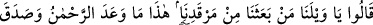
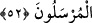
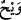
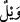
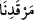
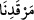
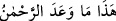
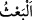
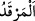

Buna iki şekilde cevap verilir: Birincisi, ayağa kalkmak hızlı yürümeye/koşmaya ters
düşmez. Çünkü yürüyen/koşan kimse ayaktadır. Bu bakmaya da ters düşmez. İkincisi,
aralarına zaman ve mühlet girmeden birbiri ardına meydana gelen işler sanki bir
zamanda meydana gelmiş kabul edilir. Nitekim önünü dönen kimse arkasını da
dönmüştür.
52. (İşte o zaman:) “Eyvah, eyvah! Bizi kabrimizden kim kaldırdı? Bu,
Rahmân’ın vâdettiğidir. Peygamberler gerçekten doğru söylemişler!” derler.
“(İşte o zaman:)” kâfirler kabirlerinden dirildikleri ilk anda kıyametin kendilerini
kaplayan şiddet ve dehşetinden dolayı helâklarına seslenerek “Eyvah, eyvah!” Ey bizim
helâkimiz, gel! İşte şimdi senin gelme vaktindir. Kâşifî der ki: “Bu sözün mânâsı
vay/yazıklar olsun bize demektir.”
“Bizi kabrimizden kim kaldırdı?”
“__WORD__ rahmet için kullanılan bir kelime olduğu gibi “__WORD__ de azap ve belâ için
kullanılan bir kelimedir.
Hafs “__WORD__dan sonraki işâret ismi olan “__WORD__ (bu)”nın “__WORD__nın sıfatı olduğu vehmine
düşülmemesi için “__WORD__ kelimesinde nefesi kesmeksizin latîf bir vakfe (sekte) yapar,
sonra yeni başlanan bir cümle olarak
“__WORD__ kavlinden okumaya başlardı. Bu vakfeye “sekte” denir. Sekte ise
nefes müddetinden daha az bir miktar sesi kesmektir. “__WORD__ Tahrik etmek, harekete
geçirmek demektir. “__WORD__ kelimesi ya masdardır, buna göre mânâ ‘uyumamızdan, yani
uykumuzdan’ demektir. Ya da kendisiyle cins kasdedilen mekân ismidir. Dolayısıyla
herkesin uyuduğu yer buna dâhildir. Yani uyuduğumuz yerden bizi kim uyandırdı/diriltti?
demektir.
el-Es’iletü’l-mufhıme’de der ki: “Eğer burada kâfirlerin diriltilmeden önce
kabirlerinde uyudukları haber verilmektedir. Bu durum kabir azabını reddeder.” denirse,
şöyle cevap veririz: Kâfirlerin akılları karıştığı için kendilerini uykuda zannederler. Ya
da Allah Teâlâ bu iki üfleme arasında onlardan azabı kaldırır. Sanki onlar kabirlerinde
uyuyormuş gibi olurlar. Tıpkı biraz hastalığı hafifleyip de uyuyarak kendinden geçen
hasta gibi. Son üfürüşten sonra diriltilip kıyameti görünce helâklarını isteyip onu
çağırırlar. Hz. Peygamber (s.a.)’in “İki üfürüş arasında kırk sene vardır. İkisi arasında
Rabbinizin dilemesi dışında hüküm, rahmet ya da azab yoktur.”[148] buyurması da bu
cevabı te’yid eder. Kâfirler cehennemi ve onun çeşit çeşit azabını görüp kıyamette